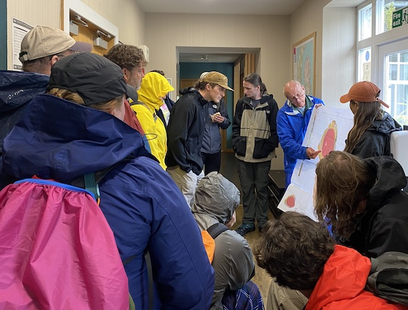
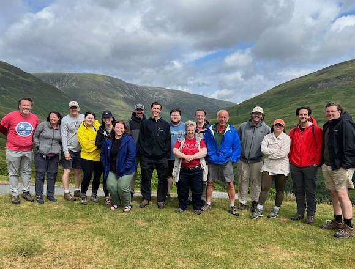
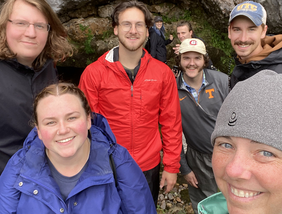

| Angus Miller (Geowalks)
explains the geology of Arthur's Seat. |
| Student presentation on the
igneous rocks of Edinburgh. The backdrop is Salisbury Crag
and the city of Edinburgh. |
| Student presentation on the
Scottish Enlightenment and the Oyster Club, Niddry Street,
Edinburgh. |
| On the coach, on our way to
Siccar Point. |
| Looking down at Siccar Point. |
| The group at Siccar Point. |
| Middle Longcraig
Limestone with depressions interpreted as tree root
cavities. |
| A game of checkers at the
hostel in Edinburgh. |
|
| At the National Museum of
Scotland. |
| In front of our hostel in
Edinburgh, waiting for our coach to Glasgow. |
| At the University of Glasgow. |
| Considering the geology of
Arran at our hostel in Lochranza ... preparing for our
hike to Newton Point. |
 |
| Group photo at Hutton's
unconformity, Newton Point, Isle of Arran. |
| Student chefs in the hostel's
kitchen. |
| Here, we consider an outcrop of
serpentine in the Highland border complex, at Balmaha. |
| The fantastic landscape of Glen
Coe. |
| Yours truly at Glen Coe. |
| Group photo at Parallel Roads, Glen Roy. |  |
| We dipped our faces at the Old
Sligachan Bridge, Isle of Skye, hoping for eternal beauty.
Look up the legend. |
| Excited to have reached the Old Man of Storr, Isle of Skye. |  |
| Some braved the Fairy Pools,
Isle of Skye. |
| Jan leads our tour of Knockan Crag (Moine Thrust). |
| At the Moine Thrust. |  |
| Group photo at Knockan Crag. |
| Considering the geology of the Assynt region during breakfast at our hostel in Inchnadamph. |
| Stromatolites at Arvdreck Castle, Loch Assynt. |
| The 2-billion-year nonconformity between Lewisian Gneiss (below) and Torridon sandstone (above). |
| Three hardy souls that hiked up to the Pipe Rock ledges below the summit of Conival. |
| Considering the significance of the Helmsdale Fault and the boulder beds, Helmsdale. |
| A student spars with Raymond, our guide at Culloden Battlefield. |
| Practicing Jacobite battle strategies. |
| A group photo with Raymond at Culloden. |
| Back to Edinburgh ... our final dinner together. |
| Up close and personal with a Highlands Cow. |